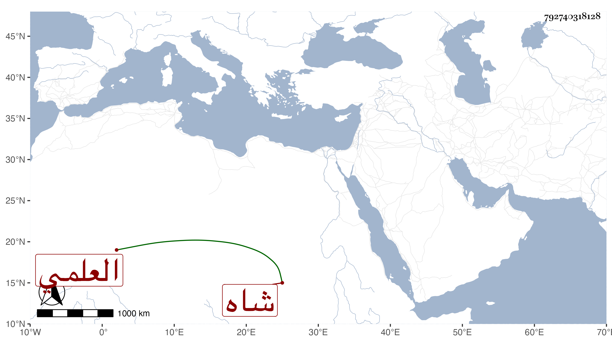

0902Sakhawi.DawLamic.ITO20230111-ara1.EIS1600.792740318128
Biography ID: 792740318128
1293
يوسف شاه العلمي داود بن الكويز . كان بديع الجمال فلما مات سيده خدم عند الزين عبد الباسط ثم عند يشبك الأعرج وولي نظر القرافتين وشادية الحرمين وقتا عقب صهره أبي بكر المصارع ثم المعلمية وأقام فيها مدة ثم عزل عنها ، واستمر خاملا حتى مات في جمادى الأولى سنة ست وسبعين .
